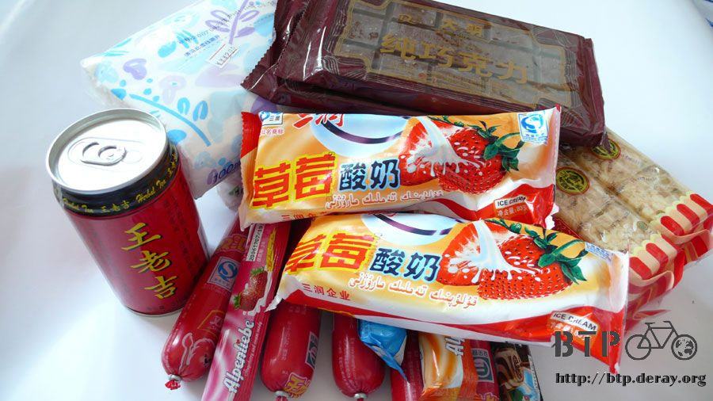
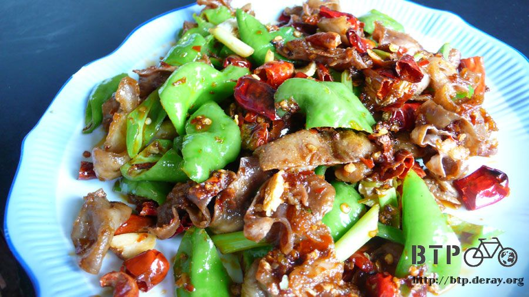
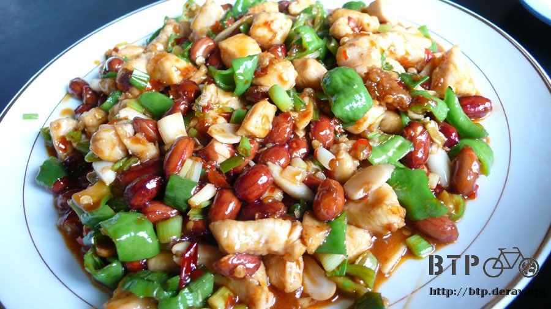
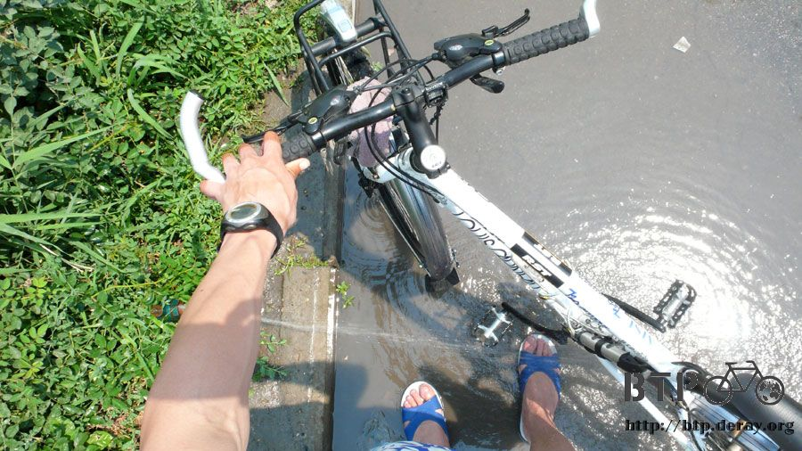

整裝待發
星期日關卡休息的消息是從旅館老闆口中聽到的，為了確定這個消息是真的，還特地又去了一趟霍爾果斯確認。
在霍爾果斯的國際汽車站那裏問了售票員和幾個司機，都很明確的跟我說星期日關卡的確是關閉的。

於是乎待在邊界的時間就這麼延長了一天，一共可以休息三天，星期日不僅關卡不能走，連銀行也是休息，所以換錢的事情就等星期一再一併解決。
多出來的這一個星期日，就跟之前在台灣時享受每一個星期天一樣的，輕鬆自在的渡過。
五個包包裡的東西全部都打開拿出來，檢查一下情況之後重新再打包回去，在行李不減少的情況下增加一些空間出來。
穿了兩個月的衣服，仔細的洗乾淨，等曬乾之後，再重新拿去洗一次，盡可能的洗乾淨一點。
到雜貨店採買補給品，便宜的物價就快要享受不到了，熱狗、巧克力、餅乾、糖果，裝的下包包的就盡可能多買一點。

牙痛的情況再吃了當地便宜的藥以及出國前銘龍的醫生弟弟開給我的藥之後，已經明顯的消腫，也不再那麼痛了。
終於可以好好的吃點正常的東西，中午的時候被招待到旅館老闆好朋友『眼鏡仔』開的餐廳吃一頓好料。
等出了中國要在品嘗這些美食就沒那麼容易了，就算吃得到，價錢也會令人望之卻步。
開心的一起吃了一頓飯，點了宮保雞丁、乾扁肥腸、炒飯和綠豆稀飯，吃得如此豐盛，好像在吃最後的晚餐一樣~_~


不怎麼大的六十二團，以旅館為中心的三百公尺，大家似乎都知道有個傢伙騎自行車到這裡，接下來還要騎出國去。
沒事的時候就在旅館門口拉張板凳坐著，到這邊聊天嗑瓜子的人還真不少，閒聊兩句，每個人的話語不外乎是要多小心，好好照顧自己。
滿滿的關懷已經讓裝不下東西的包包又塞滿了溫暖。
將小多牽到旅館門口好好的將車上的泥沙沖洗乾淨，檢查每一個螺絲有沒有鬆脫、調緊輪胎上的鋼絲、將車胎的氣打飽。

將手錶、數位相機、單車馬錶、筆記型電腦這些東西的時間都往後調整兩個小時。
明天早上哈薩克時間八點、台灣時間十點，關卡就開放了，我會起一個大早七點多就去排隊，希望能夠順利通關不要被刁難什麼。
想到就要離開中國進入一個陌生的國度，即使已經一個人旅行了兩個月，但是心裡面居然還是會緊張。
常常想著接下來要走的路，就會不自覺得呼吸急促、心跳加快。
跟第一天要搭飛機到北京一樣，忐忑不安的感覺，不知道是緊張還是興奮，又或是兩者交綜在一起的心情。
繼續閱讀：6.25 穿越國境
中國-人民幣－ 1：4.3 台幣
6.24 |
總計：55元 |
網吧2元、冰棒兩支1元、雜貨店熱狗、巧克力、糖果、餅乾、衛生紙25元、晚餐魚香茄子、炒飯12元、住店15元 |
|